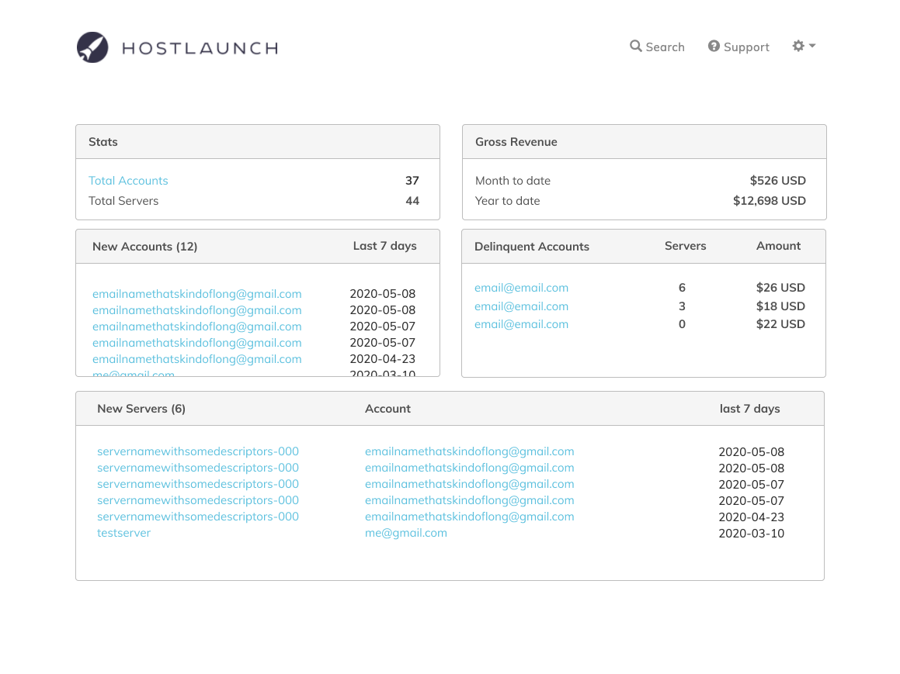

by
B2B and B2C SaaS applications to simplify the webhosting industry.
Bootstrap 3
Figma
GitHub Issues
Basecamp
UX/UI Design
Prototype Testing
HostLaunch is an app for managing a webhosting business. It allows businesses to bill customers and manage servers.
The primary focus had been on the more complex backend functionality. Work on the frontend interface had been minimal. Hosting companies were deterred by the setup process and customers were confused about the server subscription model.
I came into this project a few months before the alpha launch. At this point, a lot of the foundational dev work was in place on the backend and the frontend existed as a minimal interface for performing basic functions. This is what it looked like.
The dev team had done a good job of keeping it very simple, so users could stumble through the setup process by mere virtue of the fact that there was very little to click on. I call this strategy, “just try clicking on the big blue button and see what happens.” It works, but not well.
To get familiar with the app, I started with a crash course in the hosting industry to understand why this app even exists. Then I began an audit of the existing interface for UX/UI issues. Through informal user testing, I discovered pain points in the interface. I cataloged them in Github issues along with tech bugs and customer requests from our support department. It was valuable to see them side by side because some of them overlapped or “solved” each other and we could begin to see patterns.
The initial set up process for hosting companies required a lot of steps including API integrations with 3rd party services. Of the 300+ users who initially signed up for the alpha version, only 10% completed all the setup steps required to get their account out of “maintenance mode”.
One of the challenges of this was helping hostcos get to the point where they were receiving value from the app as soon as possible. The distance from clicking “sign up” to earning their first dollar might be an hour or it might be weeks. We needed to keep them pointed toward their goal and remind them of the value proposition of the app.
To get started, I created an initial sketch of what the onboarding process might look like. Because there was very little to interact within the interface before the setup was complete, I opted for a "wizard-like" design.
Working with the developer, we defined the technical parameters of what we could build in the time we had and then rethought the original onboarding flow.
Try not to recreate existing code. Because of the way the code was structured, it wasn’t easy to reuse code that already existed. Just because a form was in the settings menu, didn’t mean it could be easily recreated for a separate onboarding flow.
Don’t block users from skipping any steps. Because we were dealing with a number of third-party services, we knew that there were going to be times when a user couldn’t enter a piece of data right away due to forces outside our own control. They needed to complete all the requirements and also needed to skip around to do it.
Most requirements can be completed in any order, but a few are sequential.
We revised our process and tested for usability. Because the Bootstrap 3 UI was very basic and constrained by space, it was easiest to use real data in a hi-fi mockup.
Because we were working within a short timeframe, I described a few different options for our onboarding process.
Least time (most essential features) ---> Most time (more ideal features)
Thinking beyond the interface, we also created a welcome email with tips for getting your business up and running and a best practices document that addressed some common mistakes.
We worked on a number of challenges for this project such as:
The pricing and subscription model for our app was slightly different than what customers may have been used to. Our challenge was to communicate as much as possible about subscriptions indirectly through the interface and only use supporting text when necessary. We did this through carefully considered user flows.
Early version of the dashboard metrics.
Customers of the hosting companies needed to learn how to set up their first server and website.
This was my least favorite part of this project, but necessary to take on in a small company.
Although most of the work I did on this project was directly related to improving the interface, I think we overlooked one of the main challenges of this software. We spent most of our time trying to help a hosting company complete the technical steps of setting up a hosting company (connecting APIs, managing servers, etc.). We didn't spend enough time talking to actual hosting companies about their business needs. This, to me, should have been the driving force behind some of the features such as creating pricing plans and dashboard metrics.
The biggest learning on this project was how to make my designs work within the technical parameters of the code. It's one thing to come up with an idea that will work and another to come up with an idea that can be implemented quickly with relatively low effort. Working directly with the developer on this was fun and productive.